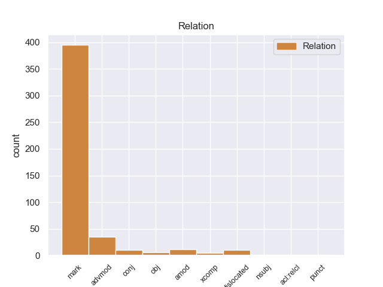
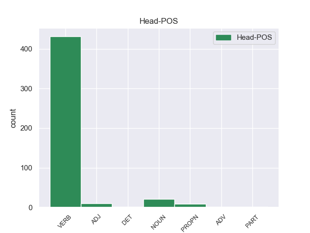
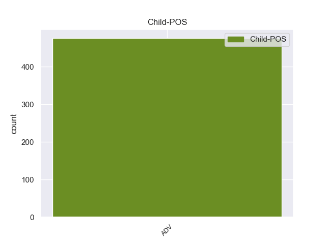

Distribution of features within this leaf



Morphosyntax Rules sorted by frequency.
- When the dependent token is the marker(mark) of the head token, and the dependent token is ADV, the Case needs to be Nom.
1 बहरहाल _ _ _ _ 0 _ _ _
2 , _ _ _ _ 0 _ _ _
3 सितंबर _ _ _ _ 0 _ _ _
4 में _ _ _ _ 0 _ _ _
5 रिपोर्ट _ _ _ _ 0 _ _ _
6 जारी _ _ _ _ 0 _ _ _
7 करने कर VERB VM Case=Acc|Number=Sing|Person=3|VerbForm=Inf 0 _ _ _
8 से _ _ _ _ 0 _ _ _
9 पहले पहले ADV NST AdpType=Post|Case=Nom|Gender=Masc|Number=Sing|Person=3 7 mark _ AltTag=ADV-NOUN|ChunkId=VGNN|ChunkType=child|Translit=pahale
10 वोल्कर _ _ _ _ 0 _ _ _
11 कोफी _ _ _ _ 0 _ _ _
12 अन्नान _ _ _ _ 0 _ _ _
13 और _ _ _ _ 0 _ _ _
14 उनके _ _ _ _ 0 _ _ _
15 वकील _ _ _ _ 0 _ _ _
16 से _ _ _ _ 0 _ _ _
17 इस _ _ _ _ 0 _ _ _
18 मुद्दे _ _ _ _ 0 _ _ _
19 पर _ _ _ _ 0 _ _ _
20 बातचीत _ _ _ _ 0 _ _ _
21 के _ _ _ _ 0 _ _ _
22 लिए _ _ _ _ 0 _ _ _
23 मिले _ _ _ _ 0 _ _ _
24 । _ _ _ _ 0 _ _ _
1 शहर _ _ _ _ 0 _ _ _
2 काजी _ _ _ _ 0 _ _ _
3 जहीर _ _ _ _ 0 _ _ _
4 आलम _ _ _ _ 0 _ _ _
5 ने _ _ _ _ 0 _ _ _
6 कहा _ _ _ _ 0 _ _ _
7 कि _ _ _ _ 0 _ _ _
8 अमर _ _ _ _ 0 _ _ _
9 उजाला _ _ _ _ 0 _ _ _
10 सभी _ _ _ _ 0 _ _ _
11 को _ _ _ _ 0 _ _ _
12 साथ साथ ADV NST AdpType=Post|Case=Nom|Gender=Masc|Number=Sing|Person=3 13 advmod _ AltTag=ADV-NOUN|ChunkId=NP5|ChunkType=head|Translit=sātha
13 लेकर ले VERB VM VerbForm=Conv 0 _ _ _
14 चलता _ _ _ _ 0 _ _ _
15 है _ _ _ _ 0 _ _ _
16 । _ _ _ _ 0 _ _ _
1 प्रमोद _ _ _ _ 0 _ _ _
2 मित्तल _ _ _ _ 0 _ _ _
3 और _ _ _ _ 0 _ _ _
4 उनकी _ _ _ _ 0 _ _ _
5 सहयोगी _ _ _ _ 0 _ _ _
6 कंपनी _ _ _ _ 0 _ _ _
7 प्रोवाइडर _ _ _ _ 0 _ _ _
8 लिमिटेड _ _ _ _ 0 _ _ _
9 का _ _ _ _ 0 _ _ _
10 दावा _ _ _ _ 0 _ _ _
11 है _ _ _ _ 0 _ _ _
12 कि _ _ _ _ 0 _ _ _
13 नवंबर _ _ _ _ 0 _ _ _
14 २००३ _ _ _ _ 0 _ _ _
15 में _ _ _ _ 0 _ _ _
16 लिमिन्को लिमिन्को PROPN NNP Case=Acc|Gender=Masc|Number=Sing|Person=3 0 _ _ _
17 ( _ _ _ _ 0 _ _ _
18 लाइबेरियन _ _ _ _ 0 _ _ _
19 माइनिंग _ _ _ _ 0 _ _ _
20 कॉरपोरेशन _ _ _ _ 0 _ _ _
21 ) _ _ _ _ 0 _ _ _
22 के _ _ _ _ 0 _ _ _
23 साथ साथ ADV NST AdpType=Post|Case=Nom|Gender=Masc|Number=Sing|Person=3 16 dislocated _ AltTag=ADV-NOUN|ChunkId=FRAGP|ChunkType=head|Translit=sātha
24 समझौते _ _ _ _ 0 _ _ _
25 पर _ _ _ _ 0 _ _ _
26 हस्ताक्षर _ _ _ _ 0 _ _ _
27 होने _ _ _ _ 0 _ _ _
28 के _ _ _ _ 0 _ _ _
29 बाद _ _ _ _ 0 _ _ _
30 इस _ _ _ _ 0 _ _ _
31 परियोजना _ _ _ _ 0 _ _ _
32 पर _ _ _ _ 0 _ _ _
33 उनका _ _ _ _ 0 _ _ _
34 हक़ _ _ _ _ 0 _ _ _
35 बनता _ _ _ _ 0 _ _ _
36 है _ _ _ _ 0 _ _ _
37 । _ _ _ _ 0 _ _ _
1 श्रीकुमार _ _ _ _ 0 _ _ _
2 के _ _ _ _ 0 _ _ _
3 वकील _ _ _ _ 0 _ _ _
4 का _ _ _ _ 0 _ _ _
5 कहना _ _ _ _ 0 _ _ _
6 है _ _ _ _ 0 _ _ _
7 जब _ _ _ _ 0 _ _ _
8 गुजरात _ _ _ _ 0 _ _ _
9 सरकार _ _ _ _ 0 _ _ _
10 ने _ _ _ _ 0 _ _ _
11 पहले पहले ADV NST AdpType=Post|Case=Nom|Gender=Masc|Number=Sing|Person=3 13 amod _ AltTag=ADV-NOUN|ChunkId=NP5|ChunkType=head|Translit=pahale
12 तीन _ _ _ _ 0 _ _ _
13 बार बार NOUN NN Case=Nom|Gender=Fem|Number=Plur|Person=3 0 _ _ _
14 पदोन्नत _ _ _ _ 0 _ _ _
15 करते _ _ _ _ 0 _ _ _
16 समय _ _ _ _ 0 _ _ _
17 लंबित _ _ _ _ 0 _ _ _
18 आपराधिक _ _ _ _ 0 _ _ _
19 मामले _ _ _ _ 0 _ _ _
20 पर _ _ _ _ 0 _ _ _
21 विचार _ _ _ _ 0 _ _ _
22 नहीं _ _ _ _ 0 _ _ _
23 किया _ _ _ _ 0 _ _ _
24 , _ _ _ _ 0 _ _ _
25 तो _ _ _ _ 0 _ _ _
26 इस _ _ _ _ 0 _ _ _
27 बार _ _ _ _ 0 _ _ _
28 यह _ _ _ _ 0 _ _ _
29 मामला _ _ _ _ 0 _ _ _
30 इतना _ _ _ _ 0 _ _ _
31 महत्वपूर्ण _ _ _ _ 0 _ _ _
32 क्यों _ _ _ _ 0 _ _ _
33 माना _ _ _ _ 0 _ _ _
34 जा _ _ _ _ 0 _ _ _
35 रहा _ _ _ _ 0 _ _ _
36 है _ _ _ _ 0 _ _ _
37 । _ _ _ _ 0 _ _ _
1 इसे _ _ _ _ 0 _ _ _
2 पिछले _ _ _ _ 0 _ _ _
3 दो _ _ _ _ 0 _ _ _
4 महीनों _ _ _ _ 0 _ _ _
5 में _ _ _ _ 0 _ _ _
6 और _ _ _ _ 0 _ _ _
7 तेज _ _ _ _ 0 _ _ _
8 कर कर VERB VM Gender=Masc|Number=Sing|Voice=Pass 0 _ _ _
9 दिया _ _ _ _ 0 _ _ _
10 गया _ _ _ _ 0 _ _ _
11 था _ _ _ _ 0 _ _ _
12 और _ _ _ _ 0 _ _ _
13 इसका _ _ _ _ 0 _ _ _
14 नतीजा _ _ _ _ 0 _ _ _
15 सामने सामने ADV NST AdpType=Post|Case=Nom|Gender=Masc|Number=Sing|Person=3 8 conj _ AltTag=ADV-NOUN|ChunkId=NP6|ChunkType=head|Translit=sāmane
16 है _ _ _ _ 0 _ _ _
17 । _ _ _ _ 0 _ _ _
1 उन्होंने _ _ _ _ 0 _ _ _
2 अमेरिकी _ _ _ _ 0 _ _ _
3 कांग्रेस _ _ _ _ 0 _ _ _
4 में _ _ _ _ 0 _ _ _
5 हुई _ _ _ _ 0 _ _ _
6 चर्चा _ _ _ _ 0 _ _ _
7 के _ _ _ _ 0 _ _ _
8 दौरान _ _ _ _ 0 _ _ _
9 सांसद _ _ _ _ 0 _ _ _
10 टॉम _ _ _ _ 0 _ _ _
11 लेंटाज _ _ _ _ 0 _ _ _
12 के _ _ _ _ 0 _ _ _
13 उस _ _ _ _ 0 _ _ _
14 वक्तव्य _ _ _ _ 0 _ _ _
15 का _ _ _ _ 0 _ _ _
16 भी _ _ _ _ 0 _ _ _
17 हवाला _ _ _ _ 0 _ _ _
18 दिया _ _ _ _ 0 _ _ _
19 जिसमें _ _ _ _ 0 _ _ _
20 कहा _ _ _ _ 0 _ _ _
21 गया _ _ _ _ 0 _ _ _
22 था _ _ _ _ 0 _ _ _
23 कि _ _ _ _ 0 _ _ _
24 अंतर्राष्ट्रीय _ _ _ _ 0 _ _ _
25 परमाणु _ _ _ _ 0 _ _ _
26 ऊर्जा _ _ _ _ 0 _ _ _
27 एजेंसी _ _ _ _ 0 _ _ _
28 में _ _ _ _ 0 _ _ _
29 वोटिंग _ _ _ _ 0 _ _ _
30 के _ _ _ _ 0 _ _ _
31 सवाल _ _ _ _ 0 _ _ _
32 पर _ _ _ _ 0 _ _ _
33 भारत _ _ _ _ 0 _ _ _
34 को _ _ _ _ 0 _ _ _
35 दो _ _ _ _ 0 _ _ _
36 - _ _ _ _ 0 _ _ _
37 टूक _ _ _ _ 0 _ _ _
38 शब्दों _ _ _ _ 0 _ _ _
39 में _ _ _ _ 0 _ _ _
40 बता _ _ _ _ 0 _ _ _
41 दिया _ _ _ _ 0 _ _ _
42 जाए _ _ _ _ 0 _ _ _
43 कि _ _ _ _ 0 _ _ _
44 वह _ _ _ _ 0 _ _ _
45 या _ _ _ _ 0 _ _ _
46 तो _ _ _ _ 0 _ _ _
47 अमेरिका _ _ _ _ 0 _ _ _
48 का _ _ _ _ 0 _ _ _
49 साथ साथ ADV NST AdpType=Post|Case=Nom|Gender=Masc|Number=Sing|Person=3 50 obj _ AltTag=ADV-NOUN|ChunkId=NP16|ChunkType=head|Translit=sātha
50 दे दे VERB VM Mood=Sub|VerbForm=Fin|Voice=Act 0 _ _ _
51 या _ _ _ _ 0 _ _ _
52 फिर _ _ _ _ 0 _ _ _
53 विरोधी _ _ _ _ 0 _ _ _
54 पाले _ _ _ _ 0 _ _ _
55 में _ _ _ _ 0 _ _ _
56 खड़ा _ _ _ _ 0 _ _ _
57 रहे _ _ _ _ 0 _ _ _
58 । _ _ _ _ 0 _ _ _
1 पार्टी _ _ _ _ 0 _ _ _
2 की _ _ _ _ 0 _ _ _
3 मुश्किल _ _ _ _ 0 _ _ _
4 यह _ _ _ _ 0 _ _ _
5 है _ _ _ _ 0 _ _ _
6 कि _ _ _ _ 0 _ _ _
7 गुजरात _ _ _ _ 0 _ _ _
8 में _ _ _ _ 0 _ _ _
9 उसके _ _ _ _ 0 _ _ _
10 पास _ _ _ _ 0 _ _ _
11 इस _ _ _ _ 0 _ _ _
12 समय _ _ _ _ 0 _ _ _
13 नरेंद्र _ _ _ _ 0 _ _ _
14 मोदी _ _ _ _ 0 _ _ _
15 का _ _ _ _ 0 _ _ _
16 ऐसा _ _ _ _ 0 _ _ _
17 कोई _ _ _ _ 0 _ _ _
18 विकल्प _ _ _ _ 0 _ _ _
19 नहीं _ _ _ _ 0 _ _ _
20 है _ _ _ _ 0 _ _ _
21 जो _ _ _ _ 0 _ _ _
22 लोकप्रियता _ _ _ _ 0 _ _ _
23 की _ _ _ _ 0 _ _ _
24 दृष्टि _ _ _ _ 0 _ _ _
25 से _ _ _ _ 0 _ _ _
26 उनसे _ _ _ _ 0 _ _ _
27 आगे आगे ADV NST AdpType=Post|Case=Nom|Gender=Masc|Number=Sing|Person=3 31 xcomp _ AltTag=ADV-NOUN|ChunkId=NP13|ChunkType=head|Translit=āge
28 या _ _ _ _ 0 _ _ _
29 उनके _ _ _ _ 0 _ _ _
30 बराबर _ _ _ _ 0 _ _ _
31 हो हो VERB VM Voice=Act 0 _ _ _
32 । _ _ _ _ 0 _ _ _
1 आने _ _ _ _ 0 _ _ _
2 वाले _ _ _ _ 0 _ _ _
3 कुछ _ _ _ _ 0 _ _ _
4 हफ्तों _ _ _ _ 0 _ _ _
5 में _ _ _ _ 0 _ _ _
6 दोनों _ _ _ _ 0 _ _ _
7 देशों _ _ _ _ 0 _ _ _
8 के _ _ _ _ 0 _ _ _
9 बीच _ _ _ _ 0 _ _ _
10 और _ _ _ _ 0 _ _ _
11 करीब करीब ADV NST AdpType=Post|Case=Nom|Gender=Masc|Number=Sing|Person=3 12 nsubj _ AltTag=ADV-NOUN|ChunkId=NP3|ChunkType=head|Translit=karība
12 आने आ VERB VM Case=Acc|Number=Plur|VerbForm=Inf 0 _ _ _
13 के _ _ _ _ 0 _ _ _
14 मौके _ _ _ _ 0 _ _ _
15 हैं _ _ _ _ 0 _ _ _
16 । _ _ _ _ 0 _ _ _
1 यहां _ _ _ _ 0 _ _ _
2 न्यूनतम _ _ _ _ 0 _ _ _
3 तापमान तापमान NOUN NN Case=Nom|Gender=Masc|Number=Sing|Person=3 0 _ _ _
4 १.२ _ _ _ _ 0 _ _ _
5 डिग्री _ _ _ _ 0 _ _ _
6 सेल्सियस _ _ _ _ 0 _ _ _
7 रिकार्ड _ _ _ _ 0 _ _ _
8 किया _ _ _ _ 0 _ _ _
9 गया _ _ _ _ 0 _ _ _
10 , _ _ _ _ 0 _ _ _
11 जो _ _ _ _ 0 _ _ _
12 सामान्य _ _ _ _ 0 _ _ _
13 स्तर _ _ _ _ 0 _ _ _
14 से _ _ _ _ 0 _ _ _
15 दो _ _ _ _ 0 _ _ _
16 डिग्री _ _ _ _ 0 _ _ _
17 नीचे नीचे ADV NST AdpType=Post|Case=Nom|Gender=Masc|Number=Sing|Person=3 3 acl:relcl _ AltTag=ADV-NOUN|ChunkId=NP7|ChunkType=head|Translit=nīce
18 था _ _ _ _ 0 _ _ _
19 । _ _ _ _ 0 _ _ _
1 भारत _ _ _ _ 0 _ _ _
2 को _ _ _ _ 0 _ _ _
3 आपूर्ति _ _ _ _ 0 _ _ _
4 होने _ _ _ _ 0 _ _ _
5 से _ _ _ _ 0 _ _ _
6 पहले _ _ _ _ 0 _ _ _
7 तक _ _ _ _ 0 _ _ _
8 गैस _ _ _ _ 0 _ _ _
9 का _ _ _ _ 0 _ _ _
10 स्वामित्व _ _ _ _ 0 _ _ _
11 नेशनल _ _ _ _ 0 _ _ _
12 ईरानियन _ _ _ _ 0 _ _ _
13 गैस _ _ _ _ 0 _ _ _
14 एक्सपोर्ट _ _ _ _ 0 _ _ _
15 कंपनी _ _ _ _ 0 _ _ _
16 ( _ _ _ _ 0 _ _ _
17 एनआईजीईसी _ _ _ _ 0 _ _ _
18 ) _ _ _ _ 0 _ _ _
19 के _ _ _ _ 0 _ _ _
20 पास पास ADV NST AdpType=Post|Case=Nom|Gender=Masc|Number=Sing|Person=3 21 punct _ AltTag=ADV-NOUN|ChunkId=FRAGP|ChunkType=child|Translit=pāsa
21 ही ही PART RP _ 0 _ _ _
22 रहेगा _ _ _ _ 0 _ _ _
23 । _ _ _ _ 0 _ _ _
non-conforming Examples:
1 रात _ _ _ _ 0 _ _ _
2 के _ _ _ _ 0 _ _ _
3 समय _ _ _ _ 0 _ _ _
4 इसे _ _ _ _ 0 _ _ _
5 तवेली _ _ _ _ 0 _ _ _
6 महल _ _ _ _ 0 _ _ _
7 से _ _ _ _ 0 _ _ _
8 निहारना _ _ _ _ 0 _ _ _
9 बहुत बहुत ADV INTF AdvType=Deg|Case=Acc,Gen|Poss=Yes 10 advmod _ AltTag=avy-ADV|ChunkId=JJP|ChunkType=child|Tam=kA|Translit=bahuta|Vib=का
10 सुखदायी सुखदायी ADJ JJ _ 0 _ _ _
11 है _ _ _ _ 0 _ _ _
12 . _ _ _ _ 0 _ _ _
1 अपनी _ _ _ _ 0 _ _ _
2 जीवटता _ _ _ _ 0 _ _ _
3 के _ _ _ _ 0 _ _ _
4 कारण _ _ _ _ 0 _ _ _
5 वे _ _ _ _ 0 _ _ _
6 हर _ _ _ _ 0 _ _ _
7 तूफान _ _ _ _ 0 _ _ _
8 के _ _ _ _ 0 _ _ _
9 बाद _ _ _ _ 0 _ _ _
10 शहर _ _ _ _ 0 _ _ _
11 की _ _ _ _ 0 _ _ _
12 बदशक्ल _ _ _ _ 0 _ _ _
13 हो _ _ _ _ 0 _ _ _
14 चुकी _ _ _ _ 0 _ _ _
15 शक्ल _ _ _ _ 0 _ _ _
16 को _ _ _ _ 0 _ _ _
17 पहले पहले ADV NST AdpType=Post|Case=Acc|Gender=Masc|Number=Sing|Person=3 19 advmod _ AltTag=ADV-NOUN|ChunkId=NP7|ChunkType=head|Translit=pahale|Vib=0_से
18 से _ _ _ _ 0 _ _ _
19 ज्यादा ज्यादा DET QF PronType=Ind 0 _ _ _
20 सुंदर _ _ _ _ 0 _ _ _
21 बना _ _ _ _ 0 _ _ _
22 देते _ _ _ _ 0 _ _ _
23 हैं _ _ _ _ 0 _ _ _
24 । _ _ _ _ 0 _ _ _
1 एक _ _ _ _ 0 _ _ _
2 टीवी _ _ _ _ 0 _ _ _
3 चैनल _ _ _ _ 0 _ _ _
4 ने _ _ _ _ 0 _ _ _
5 दिखाया _ _ _ _ 0 _ _ _
6 कि _ _ _ _ 0 _ _ _
7 सुनीता _ _ _ _ 0 _ _ _
8 बच्चों _ _ _ _ 0 _ _ _
9 को _ _ _ _ 0 _ _ _
10 गोद _ _ _ _ 0 _ _ _
11 में _ _ _ _ 0 _ _ _
12 लिए _ _ _ _ 0 _ _ _
13 थी _ _ _ _ 0 _ _ _
14 और _ _ _ _ 0 _ _ _
15 उसके _ _ _ _ 0 _ _ _
16 बगल बगल ADV NST AdpType=Post|Case=Acc|Gender=Masc|Number=Sing|Person=3 18 advmod _ AltTag=ADV-NOUN|ChunkId=NP6|ChunkType=head|Translit=bagala|Vib=0_में
17 में _ _ _ _ 0 _ _ _
18 खड़े खडा ADJ JJ Case=Acc|Gender=Masc|Number=Sing 0 _ _ _
19 एक _ _ _ _ 0 _ _ _
20 व्यक्ति _ _ _ _ 0 _ _ _
21 को _ _ _ _ 0 _ _ _
22 फनॅडिस _ _ _ _ 0 _ _ _
23 ने _ _ _ _ 0 _ _ _
24 ५०० _ _ _ _ 0 _ _ _
25 रुपये _ _ _ _ 0 _ _ _
26 का _ _ _ _ 0 _ _ _
27 नोट _ _ _ _ 0 _ _ _
28 दिया _ _ _ _ 0 _ _ _
29 । _ _ _ _ 0 _ _ _
1 दिल्ली दिल्ली PROPN NNP Case=Acc|Gender=Fem|Number=Sing|Person=3 0 _ _ _
2 तथा _ _ _ _ 0 _ _ _
3 आसपास आसपास ADV NST AdpType=Post|Case=Acc|Gender=Masc|Number=Sing|Person=3 1 conj _ AltTag=ADV-NOUN|ChunkId=NP2|ChunkType=head|Translit=āsapāsa|Vib=0_का
4 के _ _ _ _ 0 _ _ _
5 क्षेत्रों _ _ _ _ 0 _ _ _
6 में _ _ _ _ 0 _ _ _
7 भी _ _ _ _ 0 _ _ _
8 अच्छी _ _ _ _ 0 _ _ _
9 बारिश _ _ _ _ 0 _ _ _
10 हुई _ _ _ _ 0 _ _ _
11 मगर _ _ _ _ 0 _ _ _
12 यह _ _ _ _ 0 _ _ _
13 मानसून _ _ _ _ 0 _ _ _
14 पूर्व _ _ _ _ 0 _ _ _
15 बारिश _ _ _ _ 0 _ _ _
16 है _ _ _ _ 0 _ _ _
17 । _ _ _ _ 0 _ _ _
1 कम _ _ _ _ 0 _ _ _
2 समय _ _ _ _ 0 _ _ _
3 की _ _ _ _ 0 _ _ _
4 जमा _ _ _ _ 0 _ _ _
5 राशियों _ _ _ _ 0 _ _ _
6 पर _ _ _ _ 0 _ _ _
7 बढ़ी _ _ _ _ 0 _ _ _
8 ब्याज _ _ _ _ 0 _ _ _
9 दरों _ _ _ _ 0 _ _ _
10 का _ _ _ _ 0 _ _ _
11 जादू _ _ _ _ 0 _ _ _
12 ऐसा _ _ _ _ 0 _ _ _
13 चला _ _ _ _ 0 _ _ _
14 कि _ _ _ _ 0 _ _ _
15 डाकघर _ _ _ _ 0 _ _ _
16 की _ _ _ _ 0 _ _ _
17 बचत _ _ _ _ 0 _ _ _
18 योजनाओं _ _ _ _ 0 _ _ _
19 और _ _ _ _ 0 _ _ _
20 बैंकों _ _ _ _ 0 _ _ _
21 में _ _ _ _ 0 _ _ _
22 पहले पहला ADV NST AdpType=Post|Case=Acc|Gender=Masc|Number=Sing|Person=3 24 advmod _ AltTag=ADV-NOUN|ChunkId=NP9|ChunkType=head|Translit=pahale|Vib=0_से
23 से _ _ _ _ 0 _ _ _
24 चल चल VERB VM Number=Plur|Person=3 0 _ _ _
25 रहे _ _ _ _ 0 _ _ _
26 फिक्स्ड _ _ _ _ 0 _ _ _
27 खाते _ _ _ _ 0 _ _ _
28 तोड़कर _ _ _ _ 0 _ _ _
29 पैसा _ _ _ _ 0 _ _ _
30 बढ़ी _ _ _ _ 0 _ _ _
31 ब्याज _ _ _ _ 0 _ _ _
32 दरों _ _ _ _ 0 _ _ _
33 पर _ _ _ _ 0 _ _ _
34 सावधि _ _ _ _ 0 _ _ _
35 जमा _ _ _ _ 0 _ _ _
36 योजनाओं _ _ _ _ 0 _ _ _
37 में _ _ _ _ 0 _ _ _
38 लगाया _ _ _ _ 0 _ _ _
39 जा _ _ _ _ 0 _ _ _
40 रहा _ _ _ _ 0 _ _ _
41 है _ _ _ _ 0 _ _ _
42 । _ _ _ _ 0 _ _ _